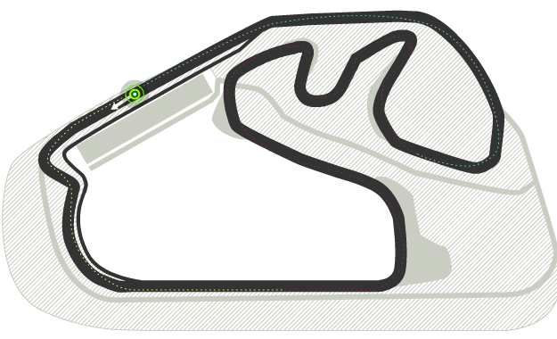
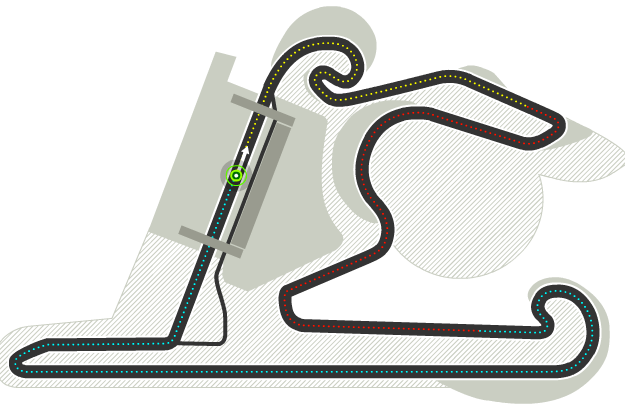
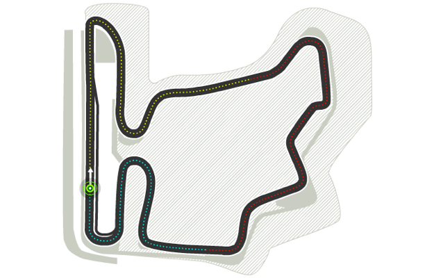
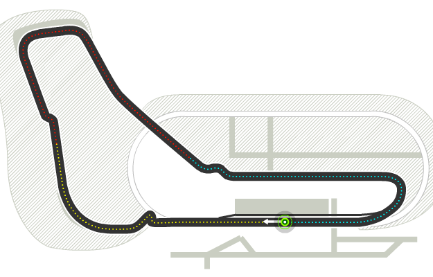
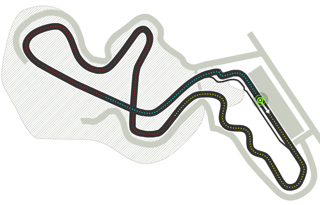
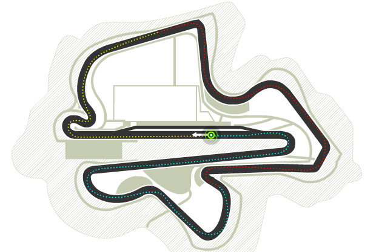
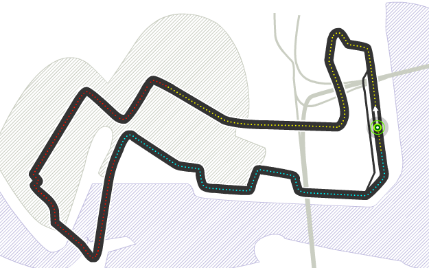

<div class="circuitos__sedes__carousel">
  <div class="carousel"><a class="carousel-item" href="#!">
      <div class="info black-text"><span>Pais: Emiratos Árabes Unidos</span><span>Ciudad: Abu Dabi</span><span>Circuito: Yas Marina</span><span>Vueltas: 55</span><span>Longitud: 5,554 km</span><span>Distancia Total: 305,355 km</span></div></a><a class="carousel-item" href="#!">
      <div class="info black-text"><span>Pais: Australia</span><span>Ciudad: Melbourne</span><span>Circuito: Albert Park</span><span>Vueltas: 58</span><span>Longitud: 5,303 km</span><span>Distancia Total: 307,574 km</span></div></a><a class="carousel-item" href="#!">
      <div class="info black-text"><span>Pais: Azerbaiyán</span><span>Ciudad: Baku</span><span>Circuito: Baku City </span><span>Vueltas: 51</span><span>Longitud: 6,003 km</span><span>Distancia Total: 306,049 km</span></div></a><a class="carousel-item" href="#!">
      <div class="info black-text"><span>Pais: Bahrain</span><span>Ciudad: Sakhir</span><span>Circuito: Bahrain International</span><span>Vueltas: 57</span><span>Longitud: 5,412 km</span><span>Distancia Total: 308,238 km</span></div></a><a class="carousel-item" href="#!">
      <div class="info black-text"><span>Pais: Bélgica</span><span>Ciudad: Spa</span><span>Circuito: Spa-Francorchamps</span><span>Vueltas: 44</span><span>Longitud: 7,004 km</span><span>Distancia Total: 308,052 km</span></div></a><a class="carousel-item" href="#!">
      <div class="info black-text"><span>Pais: Brasil</span><span>Ciudad: SaoPaulo</span><span>Circuito: José Carlos Pace</span><span>Vueltas: 71</span><span>Longitud: 4,309 km</span><span>Distancia Total: 305,909 km</span></div></a><a class="carousel-item" href="#!">
      <div class="info black-text"><span>Pais: Canadá</span><span>Ciudad: Montreal</span><span>Circuito: Gilles-Villeneuve</span><span>Vueltas: 70</span><span>Longitud: 4,361 km</span><span>Distancia Total: 305,270 km</span></div></a><a class="carousel-item" href="#!">
      <div class="info black-text"><span>Pais: China</span><span>Ciudad: Shanghai</span><span>Circuito: Shanghai International</span><span>Vueltas: 56</span><span>Longitud: 5,451 km</span><span>Distancia Total: 305,066 km</span></div></a><a class="carousel-item" href="#!">
      <div class="info black-text"><span>Pais: España</span><span>Ciudad: Barcelona</span><span>Circuito: Circuit de Catalunya</span><span>Vueltas: 66</span><span>Longitud: 4,665 km</span><span>Distancia Total: 307,104 km</span></div></a><a class="carousel-item" href="#!">
      <div class="info black-text"><span>Pais: Hungría</span><span>Ciudad: Budapest</span><span>Circuito: Hungaroring</span><span>Vueltas: 70</span><span>Longitud: 4,381 km</span><span>Distancia Total: 306,630 km</span></div></a><a class="carousel-item" href="#!">
      <div class="info black-text"><span>Pais: Italia</span><span>Ciudad: Monza</span><span>Circuito: Autodromo di Monza</span><span>Vueltas: 53</span><span>Longitud: 5,793 km</span><span>Distancia Total: 306,720 km</span></div></a><a class="carousel-item" href="#!">
      <div class="info black-text"><span>Pais: Japón</span><span>Ciudad: Suzuka</span><span>Circuito: Suzuka</span><span>Vueltas: 53</span><span>Longitud: 5,807 km</span><span>Distancia Total: 307,471 km</span></div></a><a class="carousel-item" href="#!">
      <div class="info black-text"><span>Pais: Malasia</span><span>Ciudad: Kuala Lumpur</span><span>Circuito: Sepang International</span><span>Vueltas: 56</span><span>Longitud: 5,543 km</span><span>Distancia Total: 310,408 km</span></div></a><a class="carousel-item" href="#!">
      <div class="info black-text"><span>Pais:  México</span><span>Ciudad: Ciudad de México</span><span>Circuito: Autódromo Hermanos Rodríguez</span><span>Vueltas: 69</span><span>Longitud: 4,421 km</span><span>Distancia Total: 305,409 km</span></div></a><a class="carousel-item" href="#!">
      <div class="info black-text"><span>Pais: Mónaco</span><span>Ciudad:Mónaco</span><span>Circuito: Montecarlo</span><span>Vueltas: 78</span><span>Longitud: 3,340 km</span><span>Distancia Total: 260,520 km</span></div></a><a class="carousel-item" href="#!">
      <div class="info black-text"><span>Pais: Rusia</span><span>Ciudad: Sochi</span><span>Circuito: Sochie International Street Circuit</span><span>Vueltas: 53</span><span>Longitud: 5,853 km</span><span>Distancia Total: 310,209 km</span></div></a><a class="carousel-item" href="#!">
      <div class="info black-text"><span>Pais: Singapur</span><span>Ciudad: Singapur</span><span>Circuito: Marina Bay</span><span>Vueltas: 61</span><span>Longitud: 5,073 km</span><span>Distancia Total: 309,316 km</span></div></a><a class="carousel-item" href="#!">
      <div class="info black-text"><span>Pais: Reino Unidos</span><span>Ciudad: Silverstone</span><span>Circuito: Silverstone</span><span>Vueltas: 60</span><span>Longitud: 5,141 km</span><span>Distancia Total: 308,355 km</span></div></a><a class="carousel-item" href="#!">
      <div class="info black-text"><span>Pais: Estados Unidos</span><span>Ciudad: Austin</span><span>Circuito: Circuito de las Américas</span><span>Vueltas: 56</span><span>Longitud: 5,516 km</span><span>Distancia Total: 308,896 km</span></div></a></div>
</div>